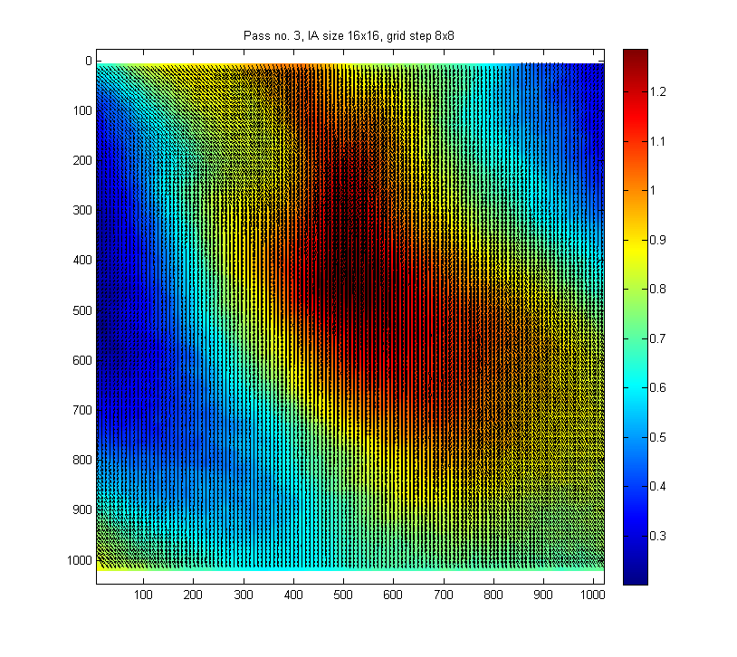
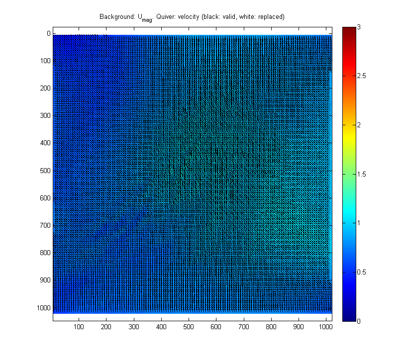
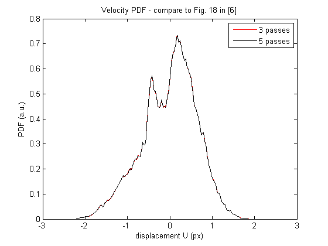
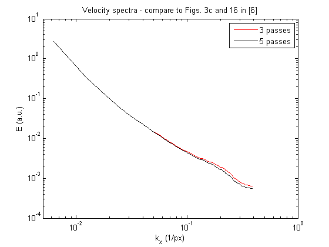

Example 07 - Treating test case A3 from 3rd PIV Challenge
The test case A3 from 3rd PIV challenge [ref. 6] is treated. Mean and rms velocities are computed, velocity PDF is determined and wavenumber spectra is calculated; these results can be compared to results shown in reference [6], Figs. 3c, 16, 18 and Table 12.
Another shown feature is the possibility to add iterations during the processing. Initially, the data are processed with three passes (with IA size 64x64, 32x32 and 16x16 pixels). Additional two passes (with 16x16 pixels interrogation size) are then performed. Effect of number of passes on velocity PDF and spectra is shown.
Reference: [6] Stanislas, M., K. Okamoto, C. J. Kahler, J. Westerweel and F. Scarano, (2008): Main results of the third international PIV Challenge. Experiments in Fluids, vol. 45, pp. 27-71.
Contents
Define image pairs to treat
Initialize the variable pivPar. Get list of image files.
% Initialize variables clear; pivPar = []; % variable for settings imagePath = ['..',filesep,'Data',filesep,'Test PIVchallenge3A3']; % folder with processed images % get list of "A" images aux = dir([imagePath, filesep, '*a.tif']); for kk = 1:numel(aux), fileList{kk} = [imagePath, filesep, aux(kk).name]; end %#ok<SAGROW> im1 = sort(fileList); % get list of "B" images aux = dir([imagePath, filesep, '*b.tif']); for kk = 1:numel(aux), fileList{kk} = [imagePath, filesep, aux(kk).name]; end %#ok<SAGROW> im2 = sort(fileList);
Running first 3 passes of PIV processing
First, image pairs will be treated with 3-pass PIV with decreasing size of interrogation area and spacing of interrogation grid. Set the corresponding parameters:
pivPar.iaSizeX = [64 32 16]; % interrogation area size for three passes pivPar.iaStepX = [32 16 8]; % grid spacing for three passes pivPar.anVelocityEst = 'none'; % iterate each image pair zero pivPar.anOnDrive = true; % files with results will be stored in an output folder pivPar.anForceProcessing = false; % if false, only image pairs, for which no file with results is % available, will be processed. Processing is skipped if file with results is available. If true, % processing is carried out even if result file is present. (Set this parameter to true if all image % pairs should be reprocessed, for example because of different setting of processing parameters). pivPar.anTargetPath = [imagePath,filesep,'pivOut1']; % folder for storing results of first three passes pivPar.qvPair = {... % define plot shown between iterations 'Umag',... % plot displacement magnitude 'quiver','selectStat','valid','linespec','-k',... % show valid vectors in black 'quiver','selectStat','replaced','linespec','-w'}; % show replaced vectors in white figure(1); [pivPar1] = pivParams([],pivPar,'defaultsSeq'); % Run the analysis now [pivData1] = pivAnalyzeImageSequence(im1,im2,[],pivPar1);
Checking presence of 101 output files... Finished in 0.02 s. Some files are missing. Treating pair 1 of 100 (???)... Accomplished in 11.86 s, last pass 7.29 s, Subpix failure 0.00 %, Median-test rejection 0.00 % Treating pair 2 of 100 (???)... Accomplished in 11.36 s, last pass 7.30 s, Subpix failure 0.00 %, Median-test rejection 0.00 % Treating pair 3 of 100 (???)... Accomplished in 11.43 s, last pass 7.35 s, Subpix failure 0.00 %, Median-test rejection 0.00 % Treating pair 4 of 100 (???)... Accomplished in 12.15 s, last pass 7.71 s, Subpix failure 0.00 %, Median-test rejection 0.00 % Treating pair 5 of 100 (???)... Accomplished in 12.57 s, last pass 7.98 s, Subpix failure 0.00 %, Median-test rejection 0.00 % Treating pair 6 of 100 (???)... Results found (piv_A3005_a_A3005_b.mat). Skipping processing. Treating pair 7 of 100 (???)... Results found (piv_A3006_a_A3006_b.mat). Skipping processing. Treating pair 8 of 100 (???)... Results found (piv_A3007_a_A3007_b.mat). Skipping processing. Treating pair 9 of 100 (???)... Results found (piv_A3008_a_A3008_b.mat). Skipping processing. Treating pair 10 of 100 (???)... Results found (piv_A3009_a_A3009_b.mat). Skipping processing. Treating pair 11 of 100 (???)... Results found (piv_A3010_a_A3010_b.mat). Skipping processing. Treating pair 12 of 100 (???)... Results found (piv_A3011_a_A3011_b.mat). Skipping processing. Treating pair 13 of 100 (???)... Results found (piv_A3012_a_A3012_b.mat). Skipping processing. Treating pair 14 of 100 (???)... Results found (piv_A3013_a_A3013_b.mat). Skipping processing. Treating pair 15 of 100 (???)... Results found (piv_A3014_a_A3014_b.mat). Skipping processing. Treating pair 16 of 100 (???)... Results found (piv_A3015_a_A3015_b.mat). Skipping processing. Treating pair 17 of 100 (???)... Results found (piv_A3016_a_A3016_b.mat). Skipping processing. Treating pair 18 of 100 (???)... Results found (piv_A3017_a_A3017_b.mat). Skipping processing. Treating pair 19 of 100 (???)... Results found (piv_A3018_a_A3018_b.mat). Skipping processing. Treating pair 20 of 100 (???)... Results found (piv_A3019_a_A3019_b.mat). Skipping processing. Treating pair 21 of 100 (???)... Results found (piv_A3020_a_A3020_b.mat). Skipping processing. Treating pair 22 of 100 (???)... Results found (piv_A3021_a_A3021_b.mat). Skipping processing. Treating pair 23 of 100 (???)... Results found (piv_A3022_a_A3022_b.mat). Skipping processing. Treating pair 24 of 100 (???)... Results found (piv_A3023_a_A3023_b.mat). Skipping processing. Treating pair 25 of 100 (???)... Results found (piv_A3024_a_A3024_b.mat). Skipping processing. Treating pair 26 of 100 (???)... Results found (piv_A3025_a_A3025_b.mat). Skipping processing. Treating pair 27 of 100 (???)... Results found (piv_A3026_a_A3026_b.mat). Skipping processing. Treating pair 28 of 100 (???)... Results found (piv_A3027_a_A3027_b.mat). Skipping processing. Treating pair 29 of 100 (???)... Results found (piv_A3028_a_A3028_b.mat). Skipping processing. Treating pair 30 of 100 (???)... Results found (piv_A3029_a_A3029_b.mat). Skipping processing. Treating pair 31 of 100 (???)... Results found (piv_A3030_a_A3030_b.mat). Skipping processing. Treating pair 32 of 100 (???)... Results found (piv_A3031_a_A3031_b.mat). Skipping processing. Treating pair 33 of 100 (???)... Results found (piv_A3032_a_A3032_b.mat). Skipping processing. Treating pair 34 of 100 (???)... Results found (piv_A3033_a_A3033_b.mat). Skipping processing. Treating pair 35 of 100 (???)... Results found (piv_A3034_a_A3034_b.mat). Skipping processing. Treating pair 36 of 100 (???)... Results found (piv_A3035_a_A3035_b.mat). Skipping processing. Treating pair 37 of 100 (???)... Results found (piv_A3036_a_A3036_b.mat). Skipping processing. Treating pair 38 of 100 (???)... Results found (piv_A3037_a_A3037_b.mat). Skipping processing. Treating pair 39 of 100 (???)... Results found (piv_A3038_a_A3038_b.mat). Skipping processing. Treating pair 40 of 100 (???)... Results found (piv_A3039_a_A3039_b.mat). Skipping processing. Treating pair 41 of 100 (???)... Results found (piv_A3040_a_A3040_b.mat). Skipping processing. Treating pair 42 of 100 (???)... Results found (piv_A3041_a_A3041_b.mat). Skipping processing. Treating pair 43 of 100 (???)... Results found (piv_A3042_a_A3042_b.mat). Skipping processing. Treating pair 44 of 100 (???)... Results found (piv_A3043_a_A3043_b.mat). Skipping processing. Treating pair 45 of 100 (???)... Results found (piv_A3044_a_A3044_b.mat). Skipping processing. Treating pair 46 of 100 (???)... Results found (piv_A3045_a_A3045_b.mat). Skipping processing. Treating pair 47 of 100 (???)... Results found (piv_A3046_a_A3046_b.mat). Skipping processing. Treating pair 48 of 100 (???)... Results found (piv_A3047_a_A3047_b.mat). Skipping processing. Treating pair 49 of 100 (???)... Results found (piv_A3048_a_A3048_b.mat). Skipping processing. Treating pair 50 of 100 (???)... Results found (piv_A3049_a_A3049_b.mat). Skipping processing. Treating pair 51 of 100 (???)... Results found (piv_A3050_a_A3050_b.mat). Skipping processing. Treating pair 52 of 100 (???)... Results found (piv_A3051_a_A3051_b.mat). Skipping processing. Treating pair 53 of 100 (???)... Results found (piv_A3052_a_A3052_b.mat). Skipping processing. Treating pair 54 of 100 (???)... Results found (piv_A3053_a_A3053_b.mat). Skipping processing. Treating pair 55 of 100 (???)... Results found (piv_A3054_a_A3054_b.mat). Skipping processing. Treating pair 56 of 100 (???)... Results found (piv_A3055_a_A3055_b.mat). Skipping processing. Treating pair 57 of 100 (???)... Results found (piv_A3056_a_A3056_b.mat). Skipping processing. Treating pair 58 of 100 (???)... Results found (piv_A3057_a_A3057_b.mat). Skipping processing. Treating pair 59 of 100 (???)... Results found (piv_A3058_a_A3058_b.mat). Skipping processing. Treating pair 60 of 100 (???)... Results found (piv_A3059_a_A3059_b.mat). Skipping processing. Treating pair 61 of 100 (???)... Results found (piv_A3060_a_A3060_b.mat). Skipping processing. Treating pair 62 of 100 (???)... Results found (piv_A3061_a_A3061_b.mat). Skipping processing. Treating pair 63 of 100 (???)... Results found (piv_A3062_a_A3062_b.mat). Skipping processing. Treating pair 64 of 100 (???)... Results found (piv_A3063_a_A3063_b.mat). Skipping processing. Treating pair 65 of 100 (???)... Results found (piv_A3064_a_A3064_b.mat). Skipping processing. Treating pair 66 of 100 (???)... Results found (piv_A3065_a_A3065_b.mat). Skipping processing. Treating pair 67 of 100 (???)... Results found (piv_A3066_a_A3066_b.mat). Skipping processing. Treating pair 68 of 100 (???)... Results found (piv_A3067_a_A3067_b.mat). Skipping processing. Treating pair 69 of 100 (???)... Results found (piv_A3068_a_A3068_b.mat). Skipping processing. Treating pair 70 of 100 (???)... Results found (piv_A3069_a_A3069_b.mat). Skipping processing. Treating pair 71 of 100 (???)... Results found (piv_A3070_a_A3070_b.mat). Skipping processing. Treating pair 72 of 100 (???)... Results found (piv_A3071_a_A3071_b.mat). Skipping processing. Treating pair 73 of 100 (???)... Results found (piv_A3072_a_A3072_b.mat). Skipping processing. Treating pair 74 of 100 (???)... Results found (piv_A3073_a_A3073_b.mat). Skipping processing. Treating pair 75 of 100 (???)... Results found (piv_A3074_a_A3074_b.mat). Skipping processing. Treating pair 76 of 100 (???)... Results found (piv_A3075_a_A3075_b.mat). Skipping processing. Treating pair 77 of 100 (???)... Results found (piv_A3076_a_A3076_b.mat). Skipping processing. Treating pair 78 of 100 (???)... Results found (piv_A3077_a_A3077_b.mat). Skipping processing. Treating pair 79 of 100 (???)... Results found (piv_A3078_a_A3078_b.mat). Skipping processing. Treating pair 80 of 100 (???)... Results found (piv_A3079_a_A3079_b.mat). Skipping processing. Treating pair 81 of 100 (???)... Results found (piv_A3080_a_A3080_b.mat). Skipping processing. Treating pair 82 of 100 (???)... Results found (piv_A3081_a_A3081_b.mat). Skipping processing. Treating pair 83 of 100 (???)... Results found (piv_A3082_a_A3082_b.mat). Skipping processing. Treating pair 84 of 100 (???)... Results found (piv_A3083_a_A3083_b.mat). Skipping processing. Treating pair 85 of 100 (???)... Results found (piv_A3084_a_A3084_b.mat). Skipping processing. Treating pair 86 of 100 (???)... Results found (piv_A3085_a_A3085_b.mat). Skipping processing. Treating pair 87 of 100 (???)... Results found (piv_A3086_a_A3086_b.mat). Skipping processing. Treating pair 88 of 100 (???)... Results found (piv_A3087_a_A3087_b.mat). Skipping processing. Treating pair 89 of 100 (???)... Results found (piv_A3088_a_A3088_b.mat). Skipping processing. Treating pair 90 of 100 (???)... Results found (piv_A3089_a_A3089_b.mat). Skipping processing. Treating pair 91 of 100 (???)... Results found (piv_A3090_a_A3090_b.mat). Skipping processing. Treating pair 92 of 100 (???)... Results found (piv_A3091_a_A3091_b.mat). Skipping processing. Treating pair 93 of 100 (???)... Results found (piv_A3092_a_A3092_b.mat). Skipping processing. Treating pair 94 of 100 (???)... Results found (piv_A3093_a_A3093_b.mat). Skipping processing. Treating pair 95 of 100 (???)... Results found (piv_A3094_a_A3094_b.mat). Skipping processing. Treating pair 96 of 100 (???)... Results found (piv_A3095_a_A3095_b.mat). Skipping processing. Treating pair 97 of 100 (???)... Results found (piv_A3096_a_A3096_b.mat). Skipping processing. Treating pair 98 of 100 (???)... Results found (piv_A3097_a_A3097_b.mat). Skipping processing. Treating pair 99 of 100 (???)... Results found (piv_A3098_a_A3098_b.mat). Skipping processing. Treating pair 100 of 100 (???)... Results found (piv_A3099_a_A3099_b.mat). Skipping processing. Replacing spurious velocity vectors... Finished in 0.25 s.
Running additional 2 passes of PIV processing
Images will be processed with two additional passes, during which the interrogation area size is kept at 16x16 pixels and grid spacing at 8x8. Results will be stored in another variable, and files will be placed in different folder.
pivPar.iaSizeX = [16 16]; % interrogation area size for fourth and fifth pass pivPar.iaStepX = [ 8 8]; % grid spacing pivPar.anVelocityEst = 'pivData'; % use velocity data stored in pivData as velocity estimate used for image % deformation. By this setting, results of previous passes are transfered % to additional passses. pivPar.ccMethod = 'dcn'; % set cross-correlation method to direct convolution (faster than default % FFT, if displacements are small, which is the case of final passes) pivPar.anTargetPath = [imagePath,filesep,'pivOut2']; % set output folder different than that for first 3 passes figure(1); [pivPar2] = pivParams([],pivPar,'defaultsSeq'); % Run the analysis now. Note that pivData1 (results of first three passes) are an input variable. [pivData2] = pivAnalyzeImageSequence(im1,im2,pivData1,pivPar2);
Checking presence of 101 output files... Finished in 0.03 s. Some files are missing. Treating pair 1 of 100 (???)... Accomplished in 17.05 s, last pass 6.86 s, Subpix failure 0.00 %, Median-test rejection 0.00 % Treating pair 2 of 100 (???)... Accomplished in 14.90 s, last pass 6.80 s, Subpix failure 0.00 %, Median-test rejection 0.00 % Treating pair 3 of 100 (???)... Accomplished in 15.18 s, last pass 6.87 s, Subpix failure 0.00 %, Median-test rejection 0.00 % Treating pair 4 of 100 (???)... Accomplished in 16.89 s, last pass 7.10 s, Subpix failure 0.00 %, Median-test rejection 0.00 % Treating pair 5 of 100 (???)... Accomplished in 15.68 s, last pass 7.43 s, Subpix failure 0.00 %, Median-test rejection 0.00 % Treating pair 6 of 100 (???)... Results found (piv_A3005_a_A3005_b.mat). Skipping processing. Treating pair 7 of 100 (???)... Results found (piv_A3006_a_A3006_b.mat). Skipping processing. Treating pair 8 of 100 (???)... Results found (piv_A3007_a_A3007_b.mat). Skipping processing. Treating pair 9 of 100 (???)... Results found (piv_A3008_a_A3008_b.mat). Skipping processing. Treating pair 10 of 100 (???)... Results found (piv_A3009_a_A3009_b.mat). Skipping processing. Treating pair 11 of 100 (???)... Results found (piv_A3010_a_A3010_b.mat). Skipping processing. Treating pair 12 of 100 (???)... Results found (piv_A3011_a_A3011_b.mat). Skipping processing. Treating pair 13 of 100 (???)... Results found (piv_A3012_a_A3012_b.mat). Skipping processing. Treating pair 14 of 100 (???)... Results found (piv_A3013_a_A3013_b.mat). Skipping processing. Treating pair 15 of 100 (???)... Results found (piv_A3014_a_A3014_b.mat). Skipping processing. Treating pair 16 of 100 (???)... Results found (piv_A3015_a_A3015_b.mat). Skipping processing. Treating pair 17 of 100 (???)... Results found (piv_A3016_a_A3016_b.mat). Skipping processing. Treating pair 18 of 100 (???)... Results found (piv_A3017_a_A3017_b.mat). Skipping processing. Treating pair 19 of 100 (???)... Results found (piv_A3018_a_A3018_b.mat). Skipping processing. Treating pair 20 of 100 (???)... Results found (piv_A3019_a_A3019_b.mat). Skipping processing. Treating pair 21 of 100 (???)... Results found (piv_A3020_a_A3020_b.mat). Skipping processing. Treating pair 22 of 100 (???)... Results found (piv_A3021_a_A3021_b.mat). Skipping processing. Treating pair 23 of 100 (???)... Results found (piv_A3022_a_A3022_b.mat). Skipping processing. Treating pair 24 of 100 (???)... Results found (piv_A3023_a_A3023_b.mat). Skipping processing. Treating pair 25 of 100 (???)... Results found (piv_A3024_a_A3024_b.mat). Skipping processing. Treating pair 26 of 100 (???)... Results found (piv_A3025_a_A3025_b.mat). Skipping processing. Treating pair 27 of 100 (???)... Results found (piv_A3026_a_A3026_b.mat). Skipping processing. Treating pair 28 of 100 (???)... Results found (piv_A3027_a_A3027_b.mat). Skipping processing. Treating pair 29 of 100 (???)... Results found (piv_A3028_a_A3028_b.mat). Skipping processing. Treating pair 30 of 100 (???)... Results found (piv_A3029_a_A3029_b.mat). Skipping processing. Treating pair 31 of 100 (???)... Results found (piv_A3030_a_A3030_b.mat). Skipping processing. Treating pair 32 of 100 (???)... Results found (piv_A3031_a_A3031_b.mat). Skipping processing. Treating pair 33 of 100 (???)... Results found (piv_A3032_a_A3032_b.mat). Skipping processing. Treating pair 34 of 100 (???)... Results found (piv_A3033_a_A3033_b.mat). Skipping processing. Treating pair 35 of 100 (???)... Results found (piv_A3034_a_A3034_b.mat). Skipping processing. Treating pair 36 of 100 (???)... Results found (piv_A3035_a_A3035_b.mat). Skipping processing. Treating pair 37 of 100 (???)... Results found (piv_A3036_a_A3036_b.mat). Skipping processing. Treating pair 38 of 100 (???)... Results found (piv_A3037_a_A3037_b.mat). Skipping processing. Treating pair 39 of 100 (???)... Results found (piv_A3038_a_A3038_b.mat). Skipping processing. Treating pair 40 of 100 (???)... Results found (piv_A3039_a_A3039_b.mat). Skipping processing. Treating pair 41 of 100 (???)... Results found (piv_A3040_a_A3040_b.mat). Skipping processing. Treating pair 42 of 100 (???)... Results found (piv_A3041_a_A3041_b.mat). Skipping processing. Treating pair 43 of 100 (???)... Results found (piv_A3042_a_A3042_b.mat). Skipping processing. Treating pair 44 of 100 (???)... Results found (piv_A3043_a_A3043_b.mat). Skipping processing. Treating pair 45 of 100 (???)... Results found (piv_A3044_a_A3044_b.mat). Skipping processing. Treating pair 46 of 100 (???)... Results found (piv_A3045_a_A3045_b.mat). Skipping processing. Treating pair 47 of 100 (???)... Results found (piv_A3046_a_A3046_b.mat). Skipping processing. Treating pair 48 of 100 (???)... Results found (piv_A3047_a_A3047_b.mat). Skipping processing. Treating pair 49 of 100 (???)... Results found (piv_A3048_a_A3048_b.mat). Skipping processing. Treating pair 50 of 100 (???)... Results found (piv_A3049_a_A3049_b.mat). Skipping processing. Treating pair 51 of 100 (???)... Results found (piv_A3050_a_A3050_b.mat). Skipping processing. Treating pair 52 of 100 (???)... Results found (piv_A3051_a_A3051_b.mat). Skipping processing. Treating pair 53 of 100 (???)... Results found (piv_A3052_a_A3052_b.mat). Skipping processing. Treating pair 54 of 100 (???)... Results found (piv_A3053_a_A3053_b.mat). Skipping processing. Treating pair 55 of 100 (???)... Results found (piv_A3054_a_A3054_b.mat). Skipping processing. Treating pair 56 of 100 (???)... Results found (piv_A3055_a_A3055_b.mat). Skipping processing. Treating pair 57 of 100 (???)... Results found (piv_A3056_a_A3056_b.mat). Skipping processing. Treating pair 58 of 100 (???)... Results found (piv_A3057_a_A3057_b.mat). Skipping processing. Treating pair 59 of 100 (???)... Results found (piv_A3058_a_A3058_b.mat). Skipping processing. Treating pair 60 of 100 (???)... Results found (piv_A3059_a_A3059_b.mat). Skipping processing. Treating pair 61 of 100 (???)... Results found (piv_A3060_a_A3060_b.mat). Skipping processing. Treating pair 62 of 100 (???)... Results found (piv_A3061_a_A3061_b.mat). Skipping processing. Treating pair 63 of 100 (???)... Results found (piv_A3062_a_A3062_b.mat). Skipping processing. Treating pair 64 of 100 (???)... Results found (piv_A3063_a_A3063_b.mat). Skipping processing. Treating pair 65 of 100 (???)... Results found (piv_A3064_a_A3064_b.mat). Skipping processing. Treating pair 66 of 100 (???)... Results found (piv_A3065_a_A3065_b.mat). Skipping processing. Treating pair 67 of 100 (???)... Results found (piv_A3066_a_A3066_b.mat). Skipping processing. Treating pair 68 of 100 (???)... Results found (piv_A3067_a_A3067_b.mat). Skipping processing. Treating pair 69 of 100 (???)... Results found (piv_A3068_a_A3068_b.mat). Skipping processing. Treating pair 70 of 100 (???)... Results found (piv_A3069_a_A3069_b.mat). Skipping processing. Treating pair 71 of 100 (???)... Results found (piv_A3070_a_A3070_b.mat). Skipping processing. Treating pair 72 of 100 (???)... Results found (piv_A3071_a_A3071_b.mat). Skipping processing. Treating pair 73 of 100 (???)... Results found (piv_A3072_a_A3072_b.mat). Skipping processing. Treating pair 74 of 100 (???)... Results found (piv_A3073_a_A3073_b.mat). Skipping processing. Treating pair 75 of 100 (???)... Results found (piv_A3074_a_A3074_b.mat). Skipping processing. Treating pair 76 of 100 (???)... Results found (piv_A3075_a_A3075_b.mat). Skipping processing. Treating pair 77 of 100 (???)... Results found (piv_A3076_a_A3076_b.mat). Skipping processing. Treating pair 78 of 100 (???)... Results found (piv_A3077_a_A3077_b.mat). Skipping processing. Treating pair 79 of 100 (???)... Results found (piv_A3078_a_A3078_b.mat). Skipping processing. Treating pair 80 of 100 (???)... Results found (piv_A3079_a_A3079_b.mat). Skipping processing. Treating pair 81 of 100 (???)... Results found (piv_A3080_a_A3080_b.mat). Skipping processing. Treating pair 82 of 100 (???)... Results found (piv_A3081_a_A3081_b.mat). Skipping processing. Treating pair 83 of 100 (???)... Results found (piv_A3082_a_A3082_b.mat). Skipping processing. Treating pair 84 of 100 (???)... Results found (piv_A3083_a_A3083_b.mat). Skipping processing. Treating pair 85 of 100 (???)... Results found (piv_A3084_a_A3084_b.mat). Skipping processing. Treating pair 86 of 100 (???)... Results found (piv_A3085_a_A3085_b.mat). Skipping processing. Treating pair 87 of 100 (???)... Results found (piv_A3086_a_A3086_b.mat). Skipping processing. Treating pair 88 of 100 (???)... Results found (piv_A3087_a_A3087_b.mat). Skipping processing. Treating pair 89 of 100 (???)... Results found (piv_A3088_a_A3088_b.mat). Skipping processing. Treating pair 90 of 100 (???)... Results found (piv_A3089_a_A3089_b.mat). Skipping processing. Treating pair 91 of 100 (???)... Results found (piv_A3090_a_A3090_b.mat). Skipping processing. Treating pair 92 of 100 (???)... Results found (piv_A3091_a_A3091_b.mat). Skipping processing. Treating pair 93 of 100 (???)... Results found (piv_A3092_a_A3092_b.mat). Skipping processing. Treating pair 94 of 100 (???)... Results found (piv_A3093_a_A3093_b.mat). Skipping processing. Treating pair 95 of 100 (???)... Results found (piv_A3094_a_A3094_b.mat). Skipping processing. Treating pair 96 of 100 (???)... Results found (piv_A3095_a_A3095_b.mat). Skipping processing. Treating pair 97 of 100 (???)... Results found (piv_A3096_a_A3096_b.mat). Skipping processing. Treating pair 98 of 100 (???)... Results found (piv_A3097_a_A3097_b.mat). Skipping processing. Treating pair 99 of 100 (???)... Results found (piv_A3098_a_A3098_b.mat). Skipping processing. Treating pair 100 of 100 (???)... Results found (piv_A3099_a_A3099_b.mat). Skipping processing. Replacing spurious velocity vectors... Finished in 0.23 s.
Show results
First, samples of the velocity field are shown
N = numel(pivData2.U); Nt = size(pivData2.U,3); figure(1); for kk=1:10:Nt hold off; pivQuiver(pivData2,'timeSlice',kk,... 'Umag','clipLo',0,'clipHi',3,... 'quiver','linespec','-k','selectStat','valid',... 'quiver','linespec','-w','selectStat','replaced'); title('Background: U_{mag}. Quiver: velocity (black: valid, white: replaced)'); end
Compute the mean and rms velocities, display then and compare them to the reference values.
% Statistics for the velocity fields after 3 passes: meanU1 = mean(reshape(pivData1.U,N,1)); meanV1 = mean(reshape(pivData1.V,N,1)); stdU1 = std(reshape(pivData1.U,N,1)); stdV1 = std(reshape(pivData1.V,N,1)); % Statistics for the velocity fields after 5 passes: meanU2 = mean(reshape(pivData2.U,N,1)); meanV2 = mean(reshape(pivData2.V,N,1)); stdU2 = std(reshape(pivData2.U,N,1)); stdV2 = std(reshape(pivData2.V,N,1)); % Print results: fprintf('\nStatistics (3 passes): mean(U) = %+6.4f, mean(V) = %+6.4f, std(U) = %+6.4f, std(V) = %+6.4f\n',... meanU1,-meanV1,stdU1,stdV1); fprintf('Statistics (5 passes): mean(U) = %+6.4f, mean(V) = %+6.4f, std(U) = %+6.4f, std(V) = %+6.4f\n',... meanU2,-meanV2,stdU2,stdV2); fprintf('Reference: mean(U) = %+6.4f, mean(V) = %+6.4f, std(U) = %+6.4f, std(V) = %+6.4f\n',... -0.0375,-0.0003,0.6414,0.5527);
Statistics (3 passes): mean(U) = -0.0366, mean(V) = -0.0005, std(U) = +0.6411, std(V) = +0.5508 Statistics (5 passes): mean(U) = -0.0366, mean(V) = -0.0005, std(U) = +0.6409, std(V) = +0.5507 Reference: mean(U) = -0.0375, mean(V) = -0.0003, std(U) = +0.6414, std(V) = +0.5527
Compute histogram of u' and show it
% define bin range of histogram binranges = (-3:0.02:3)'; % compute and normalize histogram bincounts1 = histc(reshape(pivData1.U-meanU1,N,1),binranges); bincounts1 = bincounts1/(sum(bincounts1)*(binranges(2)-binranges(1))); bincounts2 = histc(reshape(pivData2.U-meanU2,N,1),binranges); bincounts2 = bincounts2/(sum(bincounts2)*(binranges(2)-binranges(1))); % display it figure(2); plot(binranges,bincounts1,'-r',binranges,bincounts2,'-k'); legend('3 passes','5 passes'); xlabel('displacement U (px)'); ylabel('PDF (a.u.)'); title('Velocity PDF - compare to Fig. 18 in [6]');
Compute power spectra of u':
% Spectrum from the velocity field after 3 passes uprime1 = pivData1.U-meanU1; % velocity difference from the mean velocity uspectra1 = zeros(size(uprime1,1)*size(uprime1,3),size(uprime1,2)); % Compute spectrum for every row of velocity data for ky = 1:size(uprime1,1) for kt = 1:size(uprime1,3) uspectra1(kt+(ky-1)*size(uprime1,1),:) = abs(fft(uprime1(ky,:,kt))).^2; end end % compute mean spectrum uspectra1 = mean(uspectra1,1); uspectra1 = uspectra1(1:floor(numel(uspectra1)/2)); % Spectrum from the velocity field after 5 passes uprime2 = pivData2.U-meanU2; uspectra2 = zeros(size(uprime2,1)*size(uprime2,3),size(uprime2,2)); for ky = 1:size(uprime2,1) for kt = 1:size(uprime2,3) uspectra2(kt+(ky-1)*size(uprime2,1),:) = abs(fft(uprime2(ky,:,kt))).^2; end end uspectra2 = mean(uspectra2,1); uspectra2 = uspectra2(1:floor(numel(uspectra2)/2)); % Determane wavenumber corresponding to the spectra dk = 1/(pivData1.X(1,end,1)-pivData1.X(1,1,1)); k = (0:(numel(uspectra1)-1))*dk; % Display the spectra figure(4); loglog(2*pi*k,uspectra1/100,'-r',2*pi*k,uspectra2/100,'-k'); legend('3 passes','5 passes'); xlabel('k_x (1/px)'); ylabel('E (a.u.)'); xlim([5e-3,1]); ylim([1e-4,10]); title('Velocity spectra - compare to Figs. 3c and 16 in [6]');